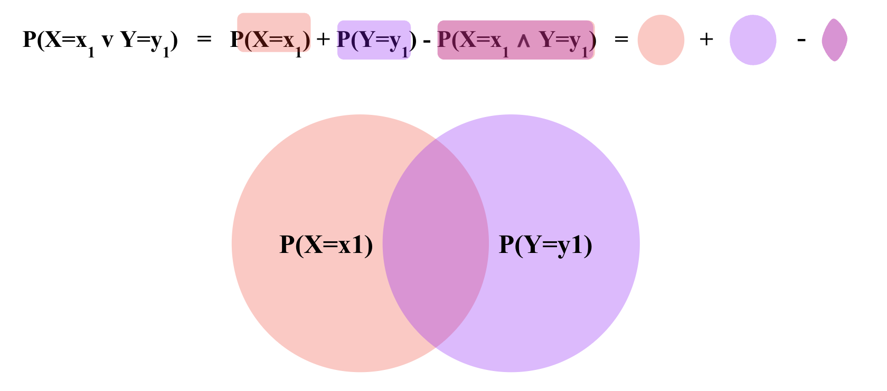

merged[['C', 'D', 'P(D | C)']]axs = sns.catplot(data=merged, x="D", y="P(D | C)", hue="C", kind="bar");axs.set(title="Conditional probability distribution of D given C\nNote that the blue bars add up to 1");
Note that the sum of conditional probabilites, unlike joint probability, is not 1.
And \(\sum_D P(D|C=\text{Heads})\) and \(\sum_D P(D|C=\text{Tails})\) are individually probability distributions that each sum to 1, over different values of \(D\).
In other words, in the plot above, the blue bars add up to 1 and the orange bars add up to 1.
Rearranging the definition of conditional probability, we get the product rule:
\[ P(A, B) = P(A | B) \cdot P(B) \]
Similarly, we can also write:
\[ P(A, B) = P(B | A) \cdot P(A)\]
In summary,
\[ P(A, B) = P(A | B) \cdot P(B) = P(B | A) \cdot P(A)\]
Chain Rule \(P(A, B, C)\)
The chain rule is a generalization of the product rule to more than two events.
$ P(A, B, C) = P(A | B, C) P(B, C) $
\(P(A, B, C) = P(A | B, C) \cdot P(B | C) \cdot P(C)\)
since \(P(B, C) = P(B | C) \cdot P(C)\) as per the product rule.
Chain rule essentially allows expressing the joint probability of multiple random variables as a product of conditional probabilities. This is useful because conditional probabilities are often easier to estimate from data than joint probabilities.
Inclusion-Exclusion Principle \(P(A \vee B)\)
Inclusion-Exclusion Principle is a way of calculating the probability of two events occurring i.e. $ P(A=a B=b) $ denoted generally as \(P(A = a \vee B = b)\).
It is defined as:
\[ P(A = a \vee B = b) = P(A = a) + P(B = b) - P(A = a \wedge B = b) \]

For example, if we are rolling two dice, the Inclusion-Exclusion Principle can be used to calculate the probability of rolling a 1 on the first die or a 2 on the second die.
$P(_1=H _2=T) $
$ = P(_2=H) + P(_1=T) - P(_2=H ∧ _1=T)$
$ = 0.5 + 0.5 - 0.25 $
$ = 0.75$
Bayes Theorem \(P(A|B)\)
Bayes theorem is a way of calculating conditional probability. For example, if we are rolling two dice, Bayes theorem can be used to calculate the probability of rolling a 1 on the first die given that we rolled a 2 on the second die.
\[ P(A | B) = \frac{P(B | A) \cdot P(A)}{P(B)} \]
\(P(A|B)\) in the context of Bayes theorem is called the Posterior probability.
\(P(B|A)\) is called the Likelihood.
\(P(A)\) is called the Prior probability.
\(P(B)\) is called the Evidence, also known as Marginal Likelihood.
Bayes Theorem allows a formal method of updating prior beliefs with new evidence and is the foundation of Bayesian Statistics. We will talk more about this when we talk about Statistics.
In machine learning, the task is often to find \(P(Y | X_1 = x_1, X_2 = x_2, \ldots X_D = x_D)\) i.e. the probability of an unknown Y, given some values for \(D\) features (\(X_1, X_2 \ldots X_D\)). Bayes theorem allows us to calculate this probability from the data.
Let’s assume we are interested in predicting if a person is a football player (\(Y_F=1\)) or not (\(Y_F=0\)), given their height (\(X_H\)) and weight (\(X_W\)).
Say, we observe a person who is 7 feet tall and weighs 200 pounds. We can use Bayes theorem to calculate the probability of this person being a football player using the following equation:
Note that here \(P(X_H = 7, X_W = 200 | Y_F)\) is the Likelihood probability of observing someone who is 7 feet tall and weighs 200 pounds, knowing if they are a football player.
\(P(Y_F)\) is the Prior probability of a person being a football player out of the entire population.
\(P(X_H = 7, X_W = 200)\) is the probability of the Evidence i.e. probability of observing anyone who is 7 feet tall and weighs 200 pounds in the entire population.